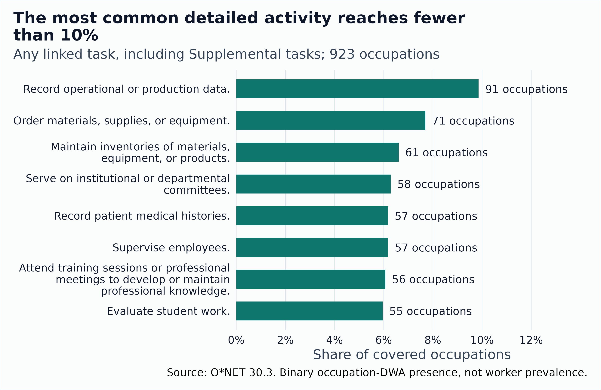
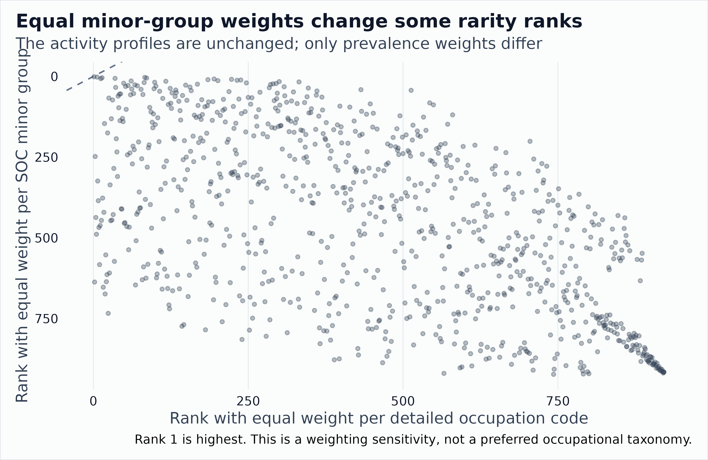
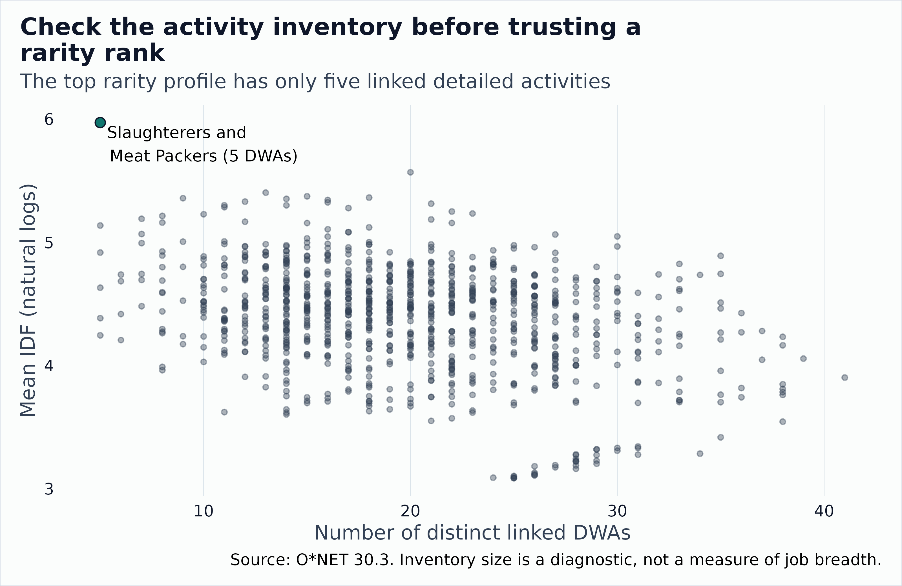
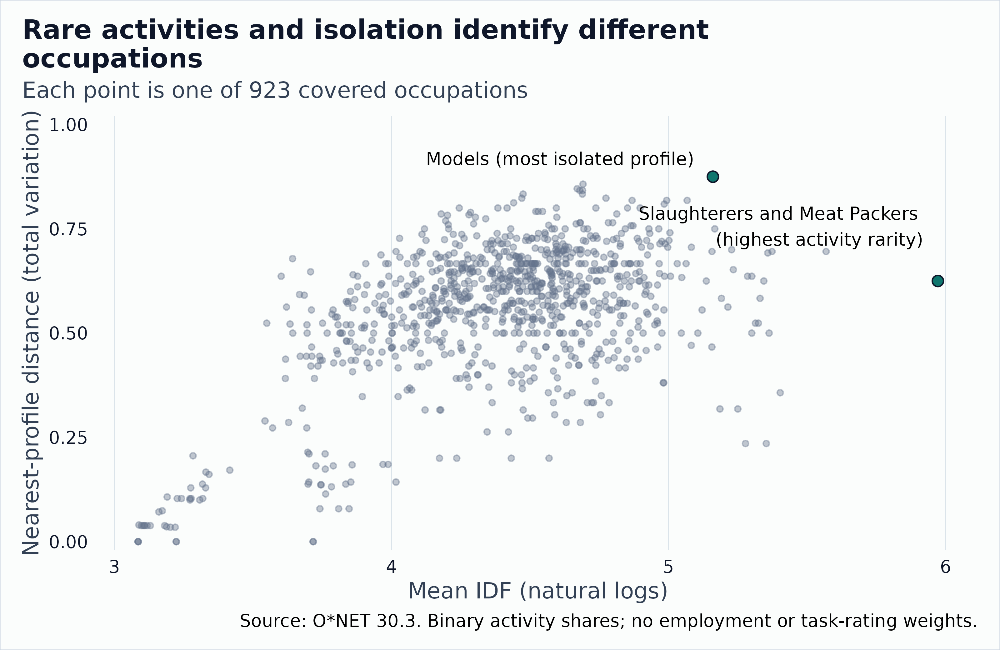
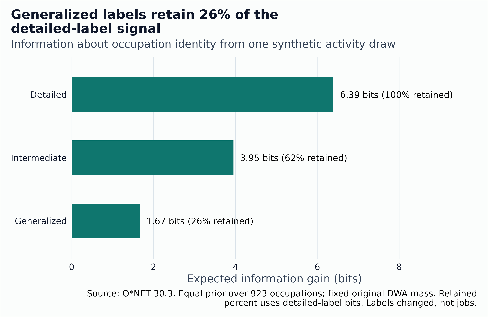
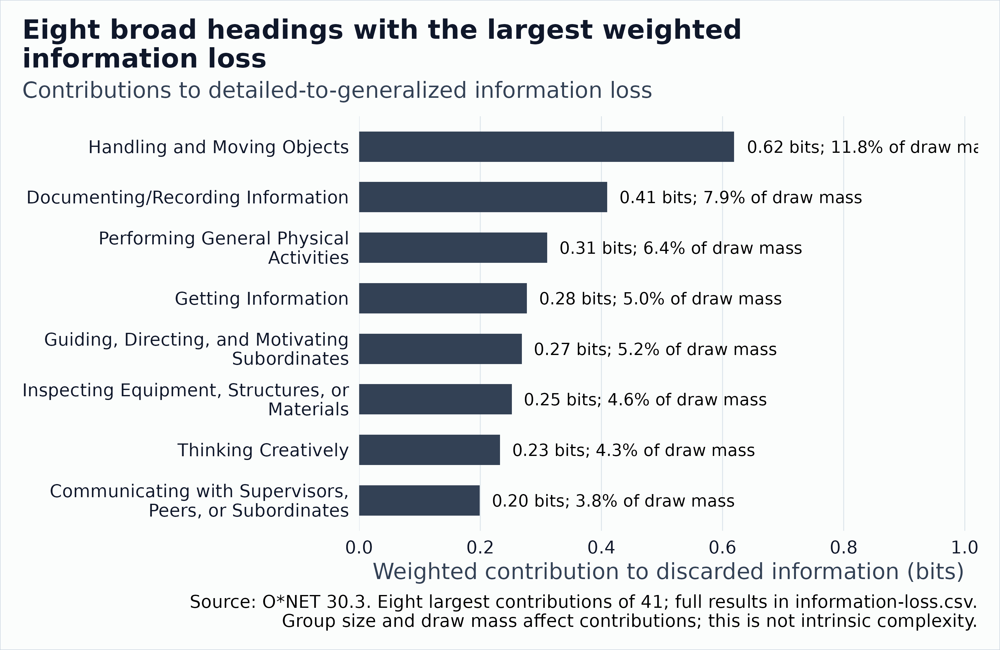
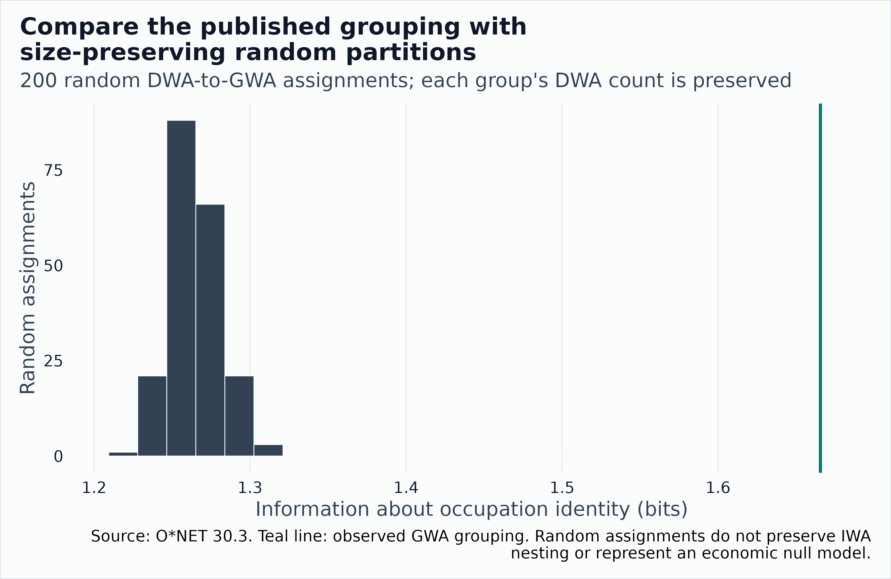

What Makes Occupations Different?
Source:vignettes/occupational-distinctiveness.Rmd
occupational-distinctiveness.RmdTwo occupations can share reading, communication, and problem solving yet differ sharply in what they produce, the knowledge they use, or the experience needed to enter them. This article asks three different questions:
- Which activities are common or uncommon across occupations?
- Which requirements distinguish a particular occupation, and which occupations have the most unusual profiles?
- Which differences remain when we change the representation of work?
TF-IDF answers the first question and part of the second, but it is not enough for the third. It measures how rare an activity is relative to a declared comparison set. It does not say what separates one occupation from its neighbors. Economic value, difficulty, worker scarcity, time spent, and exposure to AI require separate measures. A common skill can still distinguish occupations through its required level. A rare activity need not make its occupation unlike its closest neighbor.
With binary activity profiles, the occupation-level TF-IDF summary is just the mean of log inverse prevalence over the occupation’s activities. We keep it as a transparent descriptive baseline. The third question gets a different tool: an information-loss budget that counts how many bits of occupation identity survive when activity labels are grouped. It is an accounting device, not a new uniqueness score.
The article combines a derived snapshot of the full public O*NET 30.3 archive with clearly labeled stylized examples for the multidomain methods. Article builds use bundled tables and do not access the network. The helpers are article code, not exported package functions or an endorsed substantive score. Rankings describe the covered O*NET occupations under the specified choices, not all jobs or workers in the United States.
First choose a shared unit of work
Treat an occupation as a document and a shared activity as a term. Do not start by treating occupation-specific Task IDs as a universal task vocabulary. Count their actual cross-occupation overlap first. If almost every ID belongs to only one occupation, almost every ID receives the same rarity weight.
O*NET provides a more useful bridge: Tasks to DWAs links task statements to Detailed Work Activities. The GWAs to IWAs to DWAs reference supplies the hierarchy from detailed to intermediate to generalized activities. These links provide a published shared vocabulary without requiring an embedding model or treating different wording as different work.
The next example uses the bundled miniature fixture, with two occupations. It demonstrates the join only; the full-archive results begin below.
archive_dir <- onet2r_inst_path("extdata", "onet-mini", "db_30_3_text")
tasks <- onet_archive_read(
"30.3", "Task Statements", path = archive_dir,
release_date = "2026-05-01"
)
links <- onet_archive_read(
"30.3", "Tasks to DWAs", path = archive_dir,
release_date = "2026-05-01"
)
hierarchy <- onet_archive_reference(
"30.3", "GWAs to IWAs to DWAs", path = archive_dir,
release_date = "2026-05-01"
)
task_overlap <- tasks |>
distinct(onet_soc_code, task_id) |>
count(task_id, name = "n_occupations")
task_overlap |>
count(n_occupations, name = "n_task_ids") |>
knitr::kable()| n_occupations | n_task_ids |
|---|---|
| 1 | 3 |
dwa_names <- hierarchy |>
distinct(dwa_element_id, dwa_element_name)
activity_links <- links |>
select(onet_soc_code, task_id, dwa_element_id) |>
distinct() |>
left_join(dwa_names, by = "dwa_element_id", relationship = "many-to-one")
stopifnot(
!anyNA(activity_links$dwa_element_id),
!anyNA(activity_links$dwa_element_name)
)
activity_links |>
knitr::kable()| onet_soc_code | task_id | dwa_element_id | dwa_element_name |
|---|---|---|---|
| 15-1252.00 | 1001 | 4.A.2.a.1.a.1 | Analyze data to inform operational decisions. |
| 15-1252.00 | 1002 | 4.A.4.a.4.a.1 | Prepare technical reports. |
| 29-1141.00 | 2001 | 4.A.2.a.3.a.1 | Monitor health or safety conditions. |
Use the reference join even if the miniature fixture already includes
names. Real text archives omit repeated labels from the link files. For
a full archive, join occupation titles from Occupation Data
and task text from Task Statements, using occupation plus
Task ID for the latter.
Before scoring, report the number of occupations with task statements, with links, and with usable ratings, plus the share of tasks that have a DWA link. Inspect unmapped tasks and suppressed ratings. An unobserved profile is not a zero-work occupation. The helpers below reject missing or all-zero occupation profiles rather than silently shrink the declared universe.
Define frequency, prevalence, and distinctiveness separately
Let be a non-negative activity weight for occupation and activity , and let be the number of occupations in a fixed universe. The baseline uses binary presence: if at least one retained task links to the activity, and zero otherwise.
Here TF means within-occupation profile share, not work time. Count each occupation once in document frequency, regardless of how many of its tasks map to the activity. The unsmoothed IDF deliberately assigns zero to a universally present activity. A convention such as would not.
For an occupation-level rarity summary, use . It is the average log inverse prevalence of that occupation’s activity profile. Retain the item-level contributions so the score remains interpretable.
What the full archive shows
The snapshot covers 923 occupations with 18796 task statements and 2083 linked DWAs. All 18796 task statements have at least one DWA link. The occupation taxonomy contains 1016 entries, so 93 entries are outside this task-based analytic universe. We do not give them zero scores. There are 0 Task IDs shared across occupations, which is why shared activities are a more useful baseline vocabulary.
The baseline retains any linked task, including Supplemental tasks, counts each occupation-DWA link once, and gives each occupation equal weight. Task ratings, employment weights, and AI-exposure measures are excluded.
Three properties of this archive limit what the rankings can mean.
- Presence is cheap. One linked task, even a Supplemental one, makes an occupation-DWA pair present. Occupations have 4 to 40 task statements and 5 to 41 DWAs. Slaughterers and Meat Packers has 14 task statements, all Supplemental and none Core. Models has ten, one Core and nine Supplemental. Restricting the data literally to Core tasks would shrink the universe to 893 occupations and make Models a one-DWA rarity leader. That is a different universe, not a robustness pass on this ranking.
- Measurement dates differ. Task vintages span 2004 to 2025 inside the May 2026 archive. The release is not a uniform 2026 measurement.
- Rankings are summaries of database labels. They describe one published archive. They are not estimates of a population quantity, so they come with no confidence intervals and no sampling interpretation.
- Code granularity matters. The baseline gives every O*NET-SOC code equal weight. A minor group with more detailed codes therefore contributes more total weight to activity prevalence than a group with fewer codes. The results are code-weighted comparisons, not equally weighted comparisons of occupational families.
Most common and least common detailed activities
observed_prevalence |>
slice_max(n_occupations, n = 8, with_ties = TRUE) |>
select(dwa_element_name, n_occupations, prevalence) |>
knitr::kable(digits = 3, col.names = c(
"Detailed work activity", "Occupations", "Share of covered occupations"
))| Detailed work activity | Occupations | Share of covered occupations |
|---|---|---|
| Record operational or production data. | 91 | 0.099 |
| Order materials, supplies, or equipment. | 71 | 0.077 |
| Maintain inventories of materials, equipment, or products. | 61 | 0.066 |
| Serve on institutional or departmental committees. | 58 | 0.063 |
| Record patient medical histories. | 57 | 0.062 |
| Supervise employees. | 57 | 0.062 |
| Attend training sessions or professional meetings to develop or maintain professional knowledge. | 56 | 0.061 |
| Evaluate student work. | 55 | 0.060 |

The eight most widely linked detailed work activities, with the number and share of the 923 covered occupations.
The most widely linked DWA is Record operational or production data. It appears in 91 of 923 covered occupations, or 9.9 percent. “Most common” is therefore relative: these are quite specific activity descriptions, not a complete inventory of general human capabilities.
At the other end, 57 DWAs occur in only one covered occupation. They tie on document frequency and IDF. The next table shows eight of these tied activities in identifier order, not eight uniquely lowest-ranked activities.
observed_prevalence |>
filter(n_occupations == 1L) |>
arrange(item) |>
head(8) |>
select(dwa_element_name, n_occupations) |>
knitr::kable(col.names = c("Example singleton DWA", "Occupations"))| Example singleton DWA | Occupations |
|---|---|
| Review audio or video recordings. | 1 |
| Research product safety. | 1 |
| Monitor biofuel production operations. | 1 |
| Monitor conditions at energy-producing landfills. | 1 |
| Monitor recreational facility operations. | 1 |
| Time vehicle speed or traffic-control equipment operation. | 1 |
| Monitor external factors impacting operations. | 1 |
| Label production materials. | 1 |
Occupations with the rarest activity profiles
observed_occupations |>
slice_min(rarity_rank, n = 8, with_ties = TRUE) |>
select(rarity_rank, title, n_activities, mean_idf, nearest_distance) |>
knitr::kable(digits = 3, col.names = c(
"Rank", "Occupation", "DWAs", "Mean IDF", "Nearest profile distance"
))| Rank | Occupation | DWAs | Mean IDF | Nearest profile distance |
|---|---|---|---|---|
| 1 | Slaughterers and Meat Packers | 5 | 5.972 | 0.625 |
| 2 | Fishing and Hunting Workers | 20 | 5.569 | 0.696 |
| 3 | Judges, Magistrate Judges, and Magistrates | 13 | 5.403 | 0.357 |
| 4 | Agricultural Equipment Operators | 15 | 5.374 | 0.696 |
| 5 | Janitors and Cleaners, Except Maids and Housekeeping Cleaners | 18 | 5.363 | 0.500 |
| 6 | Biofuels/Biodiesel Technology and Product Development Managers | 9 | 5.358 | 0.692 |
| 7 | Administrative Law Judges, Adjudicators, and Hearing Officers | 14 | 5.353 | 0.235 |
| 8 | Forest and Conservation Workers | 16 | 5.344 | 0.625 |
Slaughterers and Meat Packers ranks first on this particular rarity summary, with 5 linked activities, the smallest profile size in the archive, a minimum shared by six occupations. Its fourteen statements are all Supplemental, so its rank rests on labels attached to non-Core tasks. It is not necessarily the most isolated occupation, the most specialized occupation under another vocabulary, or the occupation with the largest entry barriers.
Profile size matters. With binary profiles, the score is a mean over activities, so small profiles have more variable scores. In this archive, profile size and the rarity score have a Spearman correlation of -0.29, and profile size and nearest-neighbor distance have -0.34. Read the rankings with the DWA counts beside them, as in the table above.
These observations are a descriptive starting point. A publishable substantive claim should survive Core-only filtering, alternative task-link weights, minimum-coverage restrictions, and broader activity groupings. The snapshot does not claim those robustness checks have all been passed. Snapshot rarity scores and distances are rounded to 12 decimal places before ranking or choosing neighbors so numerical noise does not break ties.
Sensitivity to occupational-code granularity
The baseline gives each of the 923 detailed O*NET-SOC codes equal weight. As a sensitivity, this calculation first finds each DWA’s prevalence within each five-character SOC minor-group prefix, then averages those prevalences with each represented minor group receiving equal weight:
The within-occupation TF remains normalized as before. This changes the reference prevalence, not the occupational activity profiles. The two rankings have a Spearman correlation of 0.59, and 2 occupations ranked in the top ten (including ties) overlap.

Occupation rarity ranks under equal detailed-code weights versus equal SOC minor-group weights. Points away from the diagonal change rank when the prevalence denominator changes.
| Occupation (minor group) | Code-weighted rank | Group-weighted rank | Rank change |
|---|---|---|---|
| First-Line Supervisors of Farming, Fishing, and Forestry Workers (45-10) | 24 | 734 | -710 |
| Pesticide Handlers, Sprayers, and Applicators, Vegetation (37-30) | 19 | 674 | -655 |
| First-Line Supervisors of Landscaping, Lawn Service, and Groundskeeping Workers (37-10) | 16 | 653 | -637 |
| Fishing and Hunting Workers (45-30) | 2 | 637 | -635 |
| First-Line Supervisors of Food Preparation and Serving Workers (35-10) | 143 | 774 | -631 |
| Chefs and Head Cooks (35-10) | 146 | 769 | -623 |
| First-Line Supervisors of Housekeeping and Janitorial Workers (37-10) | 21 | 636 | -615 |
| Hosts and Hostesses, Restaurant, Lounge, and Coffee Shop (35-90) | 181 | 785 | -604 |
This sensitivity gives each represented minor group equal influence on DWA prevalence; it does not make the group definitions substantively neutral. Different taxonomies or broader grouping levels could produce different rankings. The baseline remains the primary result because it is the declared equal-code comparison, not because it is invariant to taxonomy granularity. Positive rank changes indicate a better numeric rank under the group-weighted sensitivity; negative values indicate a worse rank.
Skeptical check: profile size
| DWAs in profile | Occupations | Mean rarity score | Mean nearest distance |
|---|---|---|---|
| 5 to 10 | 56 | 4.642 | 0.678 |
| 11 to 20 | 465 | 4.470 | 0.591 |
| 21 to 30 | 340 | 4.280 | 0.508 |
| 31 or more | 62 | 4.100 | 0.458 |

Real O*NET 30.3: rarity score against number of linked DWAs, with the rarity leader labeled.
Work through the score on a stylized example
activity_labels <- tibble::tribble(
~item, ~activity, ~broad_group,
"communicate", "Exchange information", "Interaction",
"analyze", "Analyze evidence", "Information",
"test", "Test a system", "Information",
"report", "Prepare a technical report", "Information",
"care", "Provide direct care", "Practical work",
"diagnose", "Diagnose a condition", "Information",
"safety", "Check safety conditions", "Practical work",
"repair", "Repair equipment", "Practical work",
"teach", "Teach a procedure", "Interaction"
)
activity_sets <- list(
A = c("communicate", "analyze", "test"),
B = c("communicate", "analyze", "report"),
C = c("communicate", "care", "diagnose"),
D = c("communicate", "care", "safety"),
E = c("communicate", "repair", "safety"),
F = c("communicate", "teach", "report")
)
universe <- names(activity_sets)
activity_profiles <- bind_rows(lapply(universe, function(code) {
tibble::tibble(occupation = code, item = activity_sets[[code]], weight = 1)
}))
scores <- profile_tfidf(activity_profiles, universe)
prevalence_table <- scores |>
distinct(item, n_occupations, prevalence, idf) |>
left_join(activity_labels, by = "item", relationship = "one-to-one") |>
arrange(desc(prevalence), activity)
prevalence_table |>
select(activity, n_occupations, prevalence, idf) |>
knitr::kable(digits = 3)| activity | n_occupations | prevalence | idf |
|---|---|---|---|
| Exchange information | 6 | 1.000 | 0.000 |
| Analyze evidence | 2 | 0.333 | 1.099 |
| Check safety conditions | 2 | 0.333 | 1.099 |
| Prepare a technical report | 2 | 0.333 | 1.099 |
| Provide direct care | 2 | 0.333 | 1.099 |
| Diagnose a condition | 1 | 0.167 | 1.792 |
| Repair equipment | 1 | 0.167 | 1.792 |
| Teach a procedure | 1 | 0.167 | 1.792 |
| Test a system | 1 | 0.167 | 1.792 |
“Exchange information” appears in all six stylized occupations and receives zero IDF. “Test a system” appears in one and receives . Neither statement establishes that testing is more important than communication.
rarity <- scores |>
summarise(mean_idf = sum(tf_idf), .by = occupation) |>
mutate(rarity_rank = min_rank(desc(mean_idf))) |>
arrange(rarity_rank, occupation)
rarity |>
knitr::kable(digits = 3)| occupation | mean_idf | rarity_rank |
|---|---|---|
| A | 0.963 | 1 |
| C | 0.963 | 1 |
| E | 0.963 | 1 |
| F | 0.963 | 1 |
| B | 0.732 | 5 |
| D | 0.732 | 5 |
scores |>
left_join(activity_labels, by = "item", relationship = "many-to-one") |>
filter(occupation == "A") |>
arrange(desc(tf_idf), activity) |>
select(occupation, activity, share, idf, tf_idf) |>
knitr::kable(digits = 3)| occupation | activity | share | idf | tf_idf |
|---|---|---|---|---|
| A | Test a system | 0.333 | 1.792 | 0.597 |
| A | Analyze evidence | 0.333 | 1.099 | 0.366 |
| A | Exchange information | 0.333 | 0.000 | 0.000 |
Keep ties rather than declaring an arbitrary winner. A national ranking and a ranking within healthcare answer different questions because the denominator and IDF change. If the question is whether two groups differ, calculate their scores with the same vocabulary and reference IDF, not separately fitted IDFs that place each group on its own scale.
Alternative weights need their own interpretation
Binary presence avoids rewarding occupations merely because they have more task statements. As sensitivity checks, use distinct linked-task counts or task Importance/Relevance weights. A task can map to several DWAs. For a count- or rating-weighted profile, split its mass over its retained links as , then sum by occupation and DWA. Otherwise heavily mapped tasks receive more total weight just because they have more links.
Decide whether to retain Supplemental tasks before calculating . Audit missing ratings instead of dropping them through an inner join. Relevance, Importance, and frequency-category responses are different quantities. Multiplying them does not produce an observed share of working hours.
Rare activities and unusual occupations are not the same
To identify unusual combinations, compare whole profiles. Here the distance between two normalized profiles is total variation:
It ranges from zero for identical compositions to one for disjoint profiles. Using the original shares preserves ubiquitous activities that TF-IDF would erase. Cosine similarity is another defensible choice, but a profile containing only universal activities has a zero TF-IDF vector and no defined TF-IDF cosine.
activity_distances <- profile_distances(activity_profiles, universe)
directed_distances <- bind_rows(
activity_distances |>
transmute(occupation = occupation_a, neighbor = occupation_b, distance),
activity_distances |>
transmute(occupation = occupation_b, neighbor = occupation_a, distance)
)
nearest <- directed_distances |>
group_by(occupation) |>
slice_min(distance, with_ties = TRUE) |>
ungroup()
nearest |>
left_join(rarity, by = "occupation", relationship = "many-to-one") |>
arrange(desc(distance), occupation, neighbor) |>
knitr::kable(digits = 3)| occupation | neighbor | distance | mean_idf | rarity_rank |
|---|---|---|---|---|
| A | B | 0.333 | 0.963 | 1 |
| B | A | 0.333 | 0.732 | 5 |
| B | F | 0.333 | 0.732 | 5 |
| C | D | 0.333 | 0.963 | 1 |
| D | C | 0.333 | 0.732 | 5 |
| D | E | 0.333 | 0.732 | 5 |
| E | D | 0.333 | 0.963 | 1 |
| F | B | 0.333 | 0.963 | 1 |
The nearest-neighbor distance measures isolation: how far an occupation sits from its closest profile. Do not add the average distance to all occupations as a second atypicality score. With about two thousand mostly sparse activities, almost every pair of profiles is nearly disjoint, so each occupation’s average distance is close to one and tracks the rarity score (a Spearman correlation of about 0.88 in this archive). Inspect the nearest neighbors and activity contributions rather than relying on one rank. Neither rarity nor distance establishes that workers can readily move between two occupations.
For binary profiles of sizes and that share activities, total variation has the closed form . It depends on the overlap count and the larger profile size, and it ignores how rare the shared activities are. That is why rarity and isolation can disagree, and why isolation carries a profile-size dependence of its own: a small profile is close to another only if that profile is also small and shares most of its activities; full containment in a larger profile still leaves a large distance. The example above is stylized; the table below uses the real archive.
For comparison, the most isolated full-archive profiles under this same binary-presence, unweighted total-variation rule are:
observed_occupations |>
slice_max(nearest_distance, n = 8, with_ties = TRUE) |>
arrange(desc(nearest_distance), occupation) |>
select(title, n_activities, nearest_distance, rarity_rank) |>
knitr::kable(digits = 3, col.names = c(
"Occupation", "DWAs", "Nearest distance", "Rarity rank"
))| Occupation | DWAs | Nearest distance | Rarity rank |
|---|---|---|---|
| Models | 8 | 0.875 | 23 |
| Park Naturalists | 28 | 0.857 | 203 |
| Digital Forensics Analysts | 20 | 0.846 | 226 |
| Lighting Technicians | 19 | 0.842 | 204 |
| Traffic Technicians | 19 | 0.842 | 217 |
| Insurance Appraisers, Auto Damage | 8 | 0.833 | 205 |
| Actuaries | 10 | 0.833 | 424 |
| Disc Jockeys, Except Radio | 17 | 0.824 | 148 |
| Aircraft Service Attendants | 15 | 0.824 | 429 |

Real O*NET 30.3 occupations: rarity score against nearest-neighbor total-variation distance, with the rarity leader and the most isolated profile labeled.
| Labeled occupation | DWAs | Mean IDF | Nearest distance | Rarity rank |
|---|---|---|---|---|
| Slaughterers and Meat Packers | 5 | 5.972 | 0.625 | 1 |
| Models | 8 | 5.160 | 0.875 | 23 |
The rank correlation between mean IDF and nearest-profile distance is 0.36. The different ordering is useful evidence that item rarity and isolation answer different questions. Distances are descriptive distances between published activity profiles, not probabilities of successful job transitions.
The snapshot also contains 5 pairs with exactly the same detailed activity set. All five share O*NET-SOC major-group prefix 25, but 3 pairs cross minor- group prefixes. Detailed codes can therefore distinguish labels even when their linked DWA inventories are identical; this small cluster does not show that all occupations within a major group share the same work.
| Occupation A | Occupation B | Minor-group prefixes (A / B) |
|---|---|---|
| 25-2023.00: Career/Technical Education Teachers, Middle School | 25-2031.00: Secondary School Teachers, Except Special and Career/Technical Education | 25-20 / 25-20 |
| 25-1067.00: Sociology Teachers, Postsecondary | 25-1113.00: Social Work Teachers, Postsecondary | 25-10 / 25-11 |
| 25-1063.00: Economics Teachers, Postsecondary | 25-1065.00: Political Science Teachers, Postsecondary | 25-10 / 25-10 |
| 25-1063.00: Economics Teachers, Postsecondary | 25-1122.00: Communications Teachers, Postsecondary | 25-10 / 25-11 |
| 25-1065.00: Political Science Teachers, Postsecondary | 25-1122.00: Communications Teachers, Postsecondary | 25-10 / 25-11 |
Skills, knowledge, experience, and working conditions
Use a separate representation for each domain:
| Domain | Useful representation | What not to do |
|---|---|---|
| Detailed work activities | Binary presence or an explicit task-link weighting rule | Count occupation-specific wording as shared activity without checking |
| Skills, knowledge, abilities | One declared Importance or Level scale per element | Treat every recorded positive rating as a meaningful presence indicator |
| Related experience and training | Full response distribution within each element and scale | Treat category codes as years or pool unrelated category systems |
| Work context | Scale-aware ratings or category distributions | Mix all contexts and scales as interchangeable units |
| Education and Job Zone | Separate entry-requirement descriptors | Interpret a summary category as the full requirement profile |
In release 30.3 the dictionary lists Essential
Skills, Transferable Skills,
Education, and Training and Experience
separately. Do not assume an older filename such as Skills
or Education, Training, and Experience applies to this
release.
Many rated descriptors appear for almost every occupation. Binary IDF then collapses toward zero even when required levels differ substantially. A threshold such as Importance above a chosen cutoff creates a prevalence measure, but the cutoff is a research choice that needs sensitivity checks. Keep raw levels and their element-specific anchors alongside any normalized profile. Normalizing ratings removes overall intensity and treats rating values as comparable non-negative weights, an assumption rather than a property of an ordinal scale.
For experience, O*NET’s category percentages describe respondents’
answers about requirements. They are not the
distribution of actual tenure among workers. Related Work Experience
(RW), On-Site or In-Plant Training (PT), and
On-The-Job Training (OJ) each require their own category
lookup.
The next example adds invented rating profiles and a three-bin experience distribution. The bins and values are stylized, not official O*NET categories or observations. They were constructed to show how distance can differ from presence-based rarity, and they establish nothing about real experience requirements.
make_profiles <- function(items, values) {
stopifnot(
is.matrix(values), nrow(values) == length(universe),
ncol(values) == length(items)
)
tibble::tibble(
occupation = rep(universe, each = length(items)),
item = rep(items, times = length(universe)),
weight = as.vector(t(values))
)
}
skill_profiles <- make_profiles(
c("reading", "reasoning", "manual"),
rbind(c(4, 4, 1), c(4, 3, 1), c(3, 4, 3),
c(3, 3, 4), c(2, 3, 5), c(5, 4, 2))
)
knowledge_profiles <- make_profiles(
c("digital", "health", "mechanical", "education"),
rbind(c(5, 1, 2, 1), c(4, 1, 2, 1), c(1, 5, 1, 2),
c(1, 4, 1, 2), c(1, 1, 5, 1), c(2, 1, 1, 5))
)
experience_profiles <- make_profiles(
c("short", "medium", "long"),
rbind(c(10, 60, 30), c(40, 40, 20), c(10, 30, 60),
c(60, 30, 10), c(30, 50, 20), c(20, 50, 30))
)
domain_profiles <- list(
activities = activity_profiles,
skills = skill_profiles,
knowledge = knowledge_profiles,
experience = experience_profiles
)
domain_distances <- bind_rows(lapply(names(domain_profiles), function(domain) {
profile_distances(domain_profiles[[domain]], universe) |>
mutate(domain = domain)
}))
profile_tfidf(skill_profiles, universe) |>
summarise(max_idf = max(idf), .by = item) |>
knitr::kable(digits = 3)| item | max_idf |
|---|---|
| reading | 0 |
| reasoning | 0 |
| manual | 0 |
| occupation_a | occupation_b | distance | domain |
|---|---|---|---|
| A | B | 0.333 | activities |
| A | B | 0.069 | skills |
| A | B | 0.056 | knowledge |
| A | B | 0.300 | experience |
Every skill is recorded as positive for every occupation, so all three skill IDFs are zero. Nevertheless A and B differ in skill composition, and especially in the constructed experience distributions. In this invented example, common descriptors carry differences through levels and distributions rather than presence. The example is constructed to show that possibility. It does not show that real occupations behave this way.
Total variation ignores the ordering of experience bins. If distance in required duration matters, use an ordered-distribution distance with justified category locations and explicit treatment of open-ended categories. Do not assign arbitrary midpoints and call the result measured years of experience.
Which domain accounts for a difference?
Start with domain-specific distances, not a single black-box vector with every column concatenated. A domain with more columns would otherwise receive more influence simply because its questionnaire is longer.
For a transparent illustrative combined distance, give each of the four domains one quarter of the weight. This is a normative choice, not an estimate. The additive construction lets us show exactly what each block contributes. Use the same complete occupation universe in every block.
combined <- domain_distances |>
summarise(
combined_distance = mean(distance),
.by = c(occupation_a, occupation_b)
)
domain_contributions <- domain_distances |>
mutate(contribution = distance / length(domain_profiles)) |>
left_join(
combined,
by = c("occupation_a", "occupation_b"),
relationship = "many-to-one"
) |>
mutate(
without_domain_fixed_weights = combined_distance - contribution,
without_domain_renormalized =
without_domain_fixed_weights * length(domain_profiles) /
(length(domain_profiles) - 1)
)
domain_contributions |>
filter(occupation_a == "A", occupation_b == "B") |>
select(domain, distance, contribution, combined_distance,
without_domain_fixed_weights, without_domain_renormalized) |>
knitr::kable(digits = 3)| domain | distance | contribution | combined_distance | without_domain_fixed_weights | without_domain_renormalized |
|---|---|---|---|---|---|
| activities | 0.333 | 0.083 | 0.19 | 0.106 | 0.142 |
| skills | 0.069 | 0.017 | 0.19 | 0.172 | 0.230 |
| knowledge | 0.056 | 0.014 | 0.19 | 0.176 | 0.234 |
| experience | 0.300 | 0.075 | 0.19 | 0.115 | 0.153 |
stopifnot(
all(abs(
domain_contributions |>
summarise(total = sum(contribution),
.by = c(occupation_a, occupation_b)) |>
pull(total) - combined$combined_distance
) < 1e-12)
)Removing experience answers how much of this constructed distance comes from experience. This subtraction cannot establish a causal effect of experience on occupational separation. The fixed-weight subtraction is an exact contribution. The renormalized alternative changes the estimand by giving the remaining domains larger weights. Repeat the comparison across occupation pairs and report how nearest neighbors and rankings change.
Also retain absolute rating-level gaps. Two occupations with ratings
(2, 2) and (4, 4) have identical normalized
profiles even though every requirement level differs. A zero
compositional distance is not equivalence in all respects.
When do differences disappear?
Coarser labels can mechanically erase differences
Collapse the stylized activities into their invented broad groups, holding the universe and activity mass fixed. In a real archive, use the published DWA-to-IWA-to-GWA hierarchy instead of these demonstration labels.
broad_profiles <- activity_profiles |>
left_join(activity_labels, by = "item", relationship = "many-to-one") |>
summarise(weight = sum(weight), .by = c(occupation, broad_group)) |>
rename(item = broad_group)
coarse_distances <- profile_distances(broad_profiles, universe) |>
rename(broad_distance = distance)
resolution_comparison <- activity_distances |>
rename(detailed_distance = distance) |>
left_join(
coarse_distances, by = c("occupation_a", "occupation_b"),
relationship = "one-to-one"
) |>
mutate(distance_lost = detailed_distance - broad_distance) |>
arrange(desc(distance_lost), occupation_a, occupation_b)
resolution_comparison |>
head(8) |>
knitr::kable(digits = 3)| occupation_a | occupation_b | detailed_distance | broad_distance | distance_lost |
|---|---|---|---|---|
| A | B | 0.333 | 0.000 | 0.333 |
| A | C | 0.667 | 0.333 | 0.333 |
| A | F | 0.667 | 0.333 | 0.333 |
| B | C | 0.667 | 0.333 | 0.333 |
| C | E | 0.667 | 0.333 | 0.333 |
| C | F | 0.667 | 0.333 | 0.333 |
| D | E | 0.333 | 0.000 | 0.333 |
| A | D | 0.667 | 0.667 | 0.000 |
pair_ab <- resolution_comparison |>
filter(occupation_a == "A", occupation_b == "B")
stopifnot(
abs(pair_ab$detailed_distance - 1 / 3) < 1e-12,
pair_ab$broad_distance == 0,
all(resolution_comparison$distance_lost >= -1e-12)
)In the stylized example, A and B differ in testing versus reporting, but both have the same broad information/interaction mixture. Their distance disappears because the representation discards that distinction, not because their work has changed. With mass-preserving grouping, total variation cannot increase. That is a mathematical property of grouping, so a drop in distance is guaranteed and is not itself a finding. Re-binarizing the broad groups or re-estimating IDF changes additional assumptions, so assess those changes separately.
The same mass-preserving coarsening can be run on the full archive. The next table uses the published hierarchy, holds the occupation universe fixed, and does not refit IDF or re-binarize parent activities. Read it with care: at the detailed grain, 371,633 of 425,503 occupation pairs (87.3 percent) share no DWA, and the mean pairwise distance is 0.987. A statistic that starts this close to its ceiling has little room to move, and by itself it does not show how distinctive occupations are. The null reference below makes that concrete.
observed_resolution |>
mutate(grain = c("Detailed activities", "Intermediate activities",
"Generalized activities")) |>
knitr::kable(digits = 3)| grain | n_pairs | mean_distance | median_distance | n_indistinguishable_pairs | mean_distance_lost |
|---|---|---|---|---|---|
| Detailed activities | 425503 | 0.987 | 1.000 | 5 | 0.000 |
| Intermediate activities | 425503 | 0.925 | 0.952 | 9 | 0.061 |
| Generalized activities | 425503 | 0.716 | 0.724 | 9 | 0.270 |
The reduction measures what grouping activity labels discards from a near-saturated statistic. It is not evidence that workers’ actual jobs have converged over time.
An information-loss budget for coarsening
The information-loss budget asks how much information about occupation identity survives when activity labels are grouped. This borrows the relevance-target idea from the information bottleneck of Tishby, Pereira, and Bialek: judge a compression by how much information it retains about a target variable. We do not fit the bottleneck algorithm. The hierarchy is fixed in advance by O*NET.
Draw an occupation uniformly from the covered occupations. Then draw a detailed activity from that occupation’s profile shares . The mixture is the mean profile, not the document-frequency ratio:
is the mean Kullback-Leibler divergence, in bits, between each occupation’s profile and the mean profile. It lies between zero and . Aggregating the original mass through the fixed DWA-to-IWA-to-GWA hierarchy gives and . By the data-processing inequality,
The decrease is guaranteed, so the informative quantities are its size, how it splits across hierarchy groups, and the retained percentage relative to the detailed bits. Losses by parent group add up exactly to the total bits discarded between the detailed and generalized grains.
This is accounting, not a new metric. When every occupation has the same number of binary activities, and , so each occupation’s divergence in bits equals its mean IDF divided by . Unequal profile sizes break that equality. The new contribution is the bookkeeping of what each grouping level discards. It is not a new uniqueness score and it is not a validated correction for profile size.
| Grain | Labels with mass | Information (bits) | Lost from DWA (bits) | Retained (% of DWA bits) |
|---|---|---|---|---|
| Detailed (DWA) | 2083 | 6.39 | 0.00 | 100.00 |
| Intermediate (IWA) | 332 | 3.95 | 2.44 | 61.88 |
| Generalized (GWA) | 41 | 1.67 | 4.72 | 26.07 |
Detailed activities carry 6.39 bits of the at most 9.85 bits that could identify one of 923 occupations. Intermediate groups retain 3.95 bits (61.9 percent of the detailed total) and generalized groups retain 1.67 bits (26.1 percent), a loss of 4.72 bits. The retained percentages use the detailed bits as the denominator.

Real O*NET 30.3 information budget: bits of occupation identity carried by activity labels at each grain, with the percentage of detailed bits retained.

Real O*NET 30.3: eight generalized-activity groups with the largest bits discarded when detailed activities are grouped. Large losses can reflect large group mass.
| Generalized activity group | DWAs | Share of mean profile | Lost bits | Lost bits per unit of mass |
|---|---|---|---|---|
| Handling and Moving Objects | 269 | 0.1176 | 0.6191 | 5.2665 |
| Documenting/Recording Information | 113 | 0.0785 | 0.4096 | 5.2147 |
| Performing General Physical Activities | 126 | 0.0636 | 0.3107 | 4.8839 |
| Getting Information | 111 | 0.0502 | 0.2768 | 5.5126 |
| Guiding, Directing, and Motivating Subordinates | 108 | 0.0517 | 0.2684 | 5.1916 |
| Inspecting Equipment, Structures, or Materials | 107 | 0.0457 | 0.2519 | 5.5071 |
| Thinking Creatively | 123 | 0.0426 | 0.2324 | 5.4514 |
| Communicating with Supervisors, Peers, or Subordinates | 67 | 0.0384 | 0.1988 | 5.1815 |
The figure and table show the eight largest groups. The bundled
information-loss.csv contains results for all 41
groups.
A group’s weighted loss rises with its share of the mean profile
(mixture_mass), so a large group can top the table simply
because it is large. The conditional loss, which divides by that mass,
shows the loss per unit of mass. The budget is not classification
accuracy, and it does not measure semantic richness, difficulty, AI
exposure, or whether jobs are converging. It describes how much a given
set of labels can say about occupation identity under this sampling
model.
Does the published GWA grouping discard more than size alone?
This diagnostic randomly assigns the 2,083 DWA labels to 41 groups while preserving the observed number of DWA labels in each group. The DWA-to- occupation profiles stay fixed. The random assignments deliberately break the published semantic groupings and IWA nesting, so this is a size-preserving partition reference, not an economic null model or an inferential test.

Observed generalized-activity grouping compared with 200 random assignments that preserve the number of detailed activities per group.
The observed generalized grouping carries 1.67 bits. The 5th, 50th, and 95th percentiles of the random-partition reference are 1.24, 1.26, 1.29 bits. 200 of the 200 assignments have information no greater than the observed grouping. This comparison isolates group size under the specified uniform assignment scheme; it does not establish that the O*NET hierarchy is uniquely meaningful or that occupations form natural families.
Is the distance more than a fixed-margin shuffle would give?
A fixed-margin reference helps judge the near-ceiling numbers above. The Curveball algorithm of Strona and colleagues swaps activities between two occupations while preserving each occupation’s number of DWAs and each DWA’s frequency exactly. The reference here uses twenty separately restarted chains, each starting from the observed activity sets. Each chain attempts trades, and attempted no-op trades count. All chains are distinct pseudorandom draws under one seed, 20261025. The resulting sets are aggregated through the same fixed hierarchy. Draw 0 is the observed archive, and draws 1 to 20 are the reference draws.
| Source | Grain | Mean pair min | Mean pair max | Median nearest min | Median nearest max | Draws |
|---|---|---|---|---|---|---|
| Observed | DWA | 0.9865 | 0.9865 | 0.5909 | 0.5909 | 1 |
| Reference draws | DWA | 0.9862 | 0.9863 | 0.8571 | 0.8621 | 20 |
| Observed | IWA | 0.9253 | 0.9253 | 0.4731 | 0.4731 | 1 |
| Reference draws | IWA | 0.9128 | 0.9145 | 0.6899 | 0.6957 | 20 |
| Observed | GWA | 0.7161 | 0.7161 | 0.2863 | 0.2863 | 1 |
| Reference draws | GWA | 0.6154 | 0.6246 | 0.3333 | 0.3457 | 20 |
![Chart comparing observed values with twenty fixed-margin reference draws at each grain. The mean pairwise distance at the detailed grain is about 0.987 observed and about 0.986 in the reference draws, a small absolute difference with the observed value slightly above all twenty endpoints. At the generalized grain the observed mean pairwise distance is higher (0.716 against 0.615 to 0.625) while the median nearest-neighbor distance is lower. The median nearest-neighbor distance at the detailed grain is about 0.59 observed against about 0.86 in the reference draws. The table above gives the exact minimum and maximum values.](occupational-distinctiveness_files/figure-html/figure-null-1.png)
Real O*NET 30.3 against fixed-margin Curveball reference draws: pairwise and nearest-neighbor distance at each grain.
At the detailed grain, the observed mean pairwise distance is 0.9865, compared with 0.9862 to 0.9863 across the twenty reference draws. This absolute difference is small. At the generalized grain, the observed mean pairwise distance is 0.7161, compared with 0.6154 to 0.6246. The observed median nearest distance at the detailed grain is 0.5909, compared with 0.8571 to 0.8621 across the reference draws. In this finite reference, observed mean pairwise distances are above, and median nearest distances below, the corresponding reference ranges at each grain. This is a descriptive comparison, not an inferential test. The twenty finite endpoints are not certified as uniform draws, and the minimum-to-maximum range is not a confidence interval. The shuffled sets are synthetic activity bundles, not economic counterfactuals. Because mixing is not certified, the gap is not a proof of a statistical difference. It also does not prove that the archive has, or lacks, economic structure.
Similarity can also increase without work converging
| Change in analysis | Why a gap might shrink | Diagnostic |
|---|---|---|
| Replace detailed tasks with broad activities | Distinct tasks acquire the same label | Hold weights fixed and compare DWA, IWA, and GWA distances |
| Keep only common skills | Shared descriptors crowd out specialized knowledge | Report domain-specific distances and dropped-feature coverage |
| Normalize each profile | Absolute requirement levels disappear | Retain raw scale-level gaps |
| Average occupations into industries | Different occupational mixtures yield similar means | Separate within-occupation profiles from employment composition |
| Change the reference universe or refit IDF | Rarity changes even if no activity changes | Score both samples with the same reference IDF |
| Drop missing or suppressed observations | The most distinctive observations may leave the sample | Show exclusions and common-support results |
| Compare adjacent database releases | Copied records can look stable without fresh measurement | Use source dates, resurvey indicators, and taxonomy seam flags |
For industry comparisons, “common across occupations” is not “common among workers.” Use employment weights to calculate a separate worker-weighted prevalence, and show coverage and the SOC bridge. Do not describe linked task counts or Relevance ratings as worker time shares. An industry-level result also needs an occupation-by-industry employment panel, not just national occupational employment.
For changes over time, freeze a baseline IDF to measure changes in occupational profiles on a common scale. Refit IDF separately as a sensitivity analysis of changing rarity. Keep taxonomy and vocabulary mappings visible. See Resurvey Cycles and Content Change and Change Decomposition. A descriptive convergence result does not identify whether technology, training, regulation, or organizational change caused it. Those explanations need additional outcomes, timing, and an identification strategy.
Run the analysis on a local archive
The following is deliberately not evaluated during
article builds. Download the public 30.3 text archive separately and
point archive_path at the ZIP or its extracted directory.
No API key is required. Keep the source receipt and digest with the
analysis. The tables used here are not the entire published occupation
taxonomy, so define the analytic universe from documented coverage.
archive_path <- "path/to/db_30_3_text.zip"
full_tasks <- onet_archive_read(
"30.3", "Task Statements", path = archive_path
)
full_links <- onet_archive_read(
"30.3", "Tasks to DWAs", path = archive_path
)
full_hierarchy <- onet_archive_reference(
"30.3", "GWAs to IWAs to DWAs", path = archive_path
)
occupation_names <- onet_archive_read(
"30.3", "Occupation Data", path = archive_path
) |>
distinct(onet_soc_code, title)
full_names <- full_hierarchy |>
distinct(dwa_element_id, dwa_element_name)
# Baseline: any linked task, including Supplemental tasks.
# Optional Core-only sensitivity: uncomment this filter and replace `full_links`
# with `core_links` below. This shrinks the occupation universe, so recalculate
# prevalence and all rankings within the reduced universe.
# core_task_keys <- full_tasks |>
# filter(task_type == "Core") |>
# distinct(onet_soc_code, task_id)
# core_links <- full_links |>
# semi_join(core_task_keys, by = c("onet_soc_code", "task_id"))
full_profiles <- full_links |>
distinct(onet_soc_code, dwa_element_id) |>
transmute(occupation = onet_soc_code, item = dwa_element_id, weight = 1)
full_universe <- sort(unique(full_profiles$occupation))
task_coverage <- full_tasks |>
distinct(onet_soc_code, task_id) |>
left_join(
full_links |>
distinct(onet_soc_code, task_id) |>
mutate(has_dwa = TRUE),
by = c("onet_soc_code", "task_id"),
relationship = "one-to-one"
) |>
summarise(
n_tasks = n(), linked_tasks = sum(!is.na(has_dwa)),
.by = onet_soc_code
)
print(task_coverage)
print(anti_join(
full_tasks |> distinct(onet_soc_code),
full_profiles |> distinct(onet_soc_code = occupation),
by = "onet_soc_code"
))
full_scores <- profile_tfidf(full_profiles, full_universe)
full_scores |>
distinct(item, n_occupations, prevalence, idf) |>
left_join(
full_names, by = c("item" = "dwa_element_id"),
relationship = "one-to-one"
) |>
arrange(desc(prevalence), item) |>
print(n = 20)
full_scores |>
summarise(mean_idf = sum(tf_idf), .by = occupation) |>
left_join(
occupation_names, by = c("occupation" = "onet_soc_code"),
relationship = "one-to-one"
) |>
arrange(desc(mean_idf), occupation) |>
print(n = 20)
experience <- onet_archive_read(
"30.3", "Training and Experience", path = archive_path
)
experience_categories <- onet_archive_reference(
"30.3", "Training and Experience Categories", path = archive_path
)
# Audit missing/suppressed values and category completeness before normalization.
experience |>
filter(scale_id == "RW") |>
select(onet_soc_code, element_id, scale_id, category, data_value,
recommend_suppress) |>
left_join(
experience_categories |>
select(element_id, scale_id, category, category_description),
by = c("element_id", "scale_id", "category"),
relationship = "many-to-one"
)For a production analysis, retain a manifest with release, source digest, taxonomy, inclusion rule, mapping grain, weight scale, suppression treatment, occupation universe, and IDF reference. Check coverage separately for each domain, then use common support for cross-domain comparisons. In rating tables, absence means missing unless you have evidence it means zero.
The full-archive ranking above is conditional on its vocabulary, comparison universe, and weighting decisions. The multidomain examples are still stylized and do not establish a national ranking for experience or knowledge.
Reproduce the bundled snapshot
The snapshot was generated on 2026-10-25 from https://www.onetcenter.org/dl_files/database/db_30_3_text.zip. The archive SHA-256 is:
#> 7758ec966fd91895b3d290b83c9f1f1d46730d37fdda4faac67104d1c0d2a780From a source checkout with the current package installed, run these three commands, each with the same local ZIP argument:
Rscript data-raw/occupational-distinctiveness.R path/to/db_30_3_text.zip
Rscript data-raw/occupational-information.R path/to/db_30_3_text.zip
Rscript data-raw/occupational-null.R path/to/db_30_3_text.zipThey regenerate the derived CSVs under
inst/extdata/occupational-distinctiveness/. The generators
record coverage and provenance, check task-link integrity and
mass-preserving coarsening, and check the archive digest. The
task-inventory.csv file carries task-vintage and inventory
metadata. The raw archive is not bundled. Source date and identifier
changes across releases still require separate review.
Sources and scope
This article includes information derived from the O*NET 30.3 Database by the U.S. Department of Labor, Employment and Training Administration (USDOL/ETA), used under CC BY 4.0. O*NET is a trademark of USDOL/ETA. onet2r has modified the information by calculating the frequencies, scores, distances, information-loss accounting, fixed-margin randomizations, and coverage summaries described above. USDOL/ETA has not approved, endorsed, or tested these modifications.
The data representations above follow the O*NET Resource Center’s Tasks
to DWAs dictionary, activity
hierarchy, Essential
Skills dictionary, scale
definitions, Training
and Experience dictionary, and experience
category definitions. Verified schema facts are recorded in
docs/DATA_NOTES.md.
TF-IDF is adapted from information retrieval. For the underlying distinction between term frequency and document frequency, see Manning, Raghavan, and Schuetze, Introduction to Information Retrieval, section 6.2, Term frequency and weighting. The occupation-level summary, distance, and domain weights here are explicit analytical choices, not measures validated by that reference.
The information-loss budget borrows the relevance-target idea from Tishby, Pereira, and Bialek, The information bottleneck method. We do not fit the bottleneck algorithm, and that reference does not validate the budget as a measure of occupational distinctiveness. The fixed-margin reference uses the Curveball algorithm: Strona et al. (2014), “A fast and unbiased procedure to randomize ecological binary matrices with fixed row and column totals,” Nature Communications 5:4114, doi:10.1038/ncomms5114.